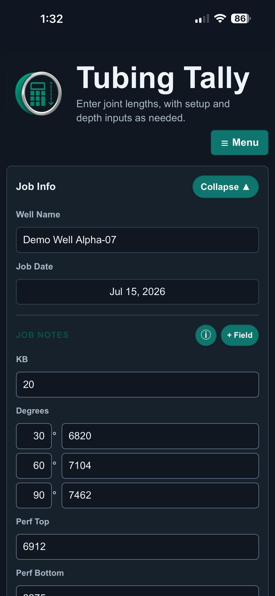
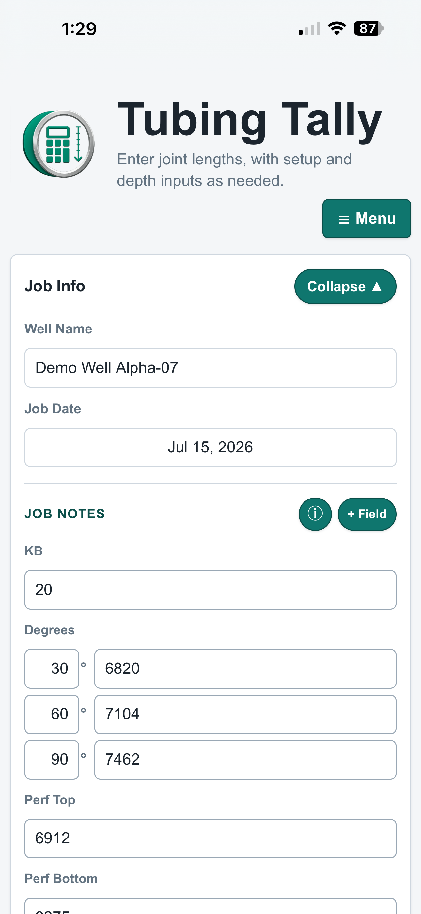
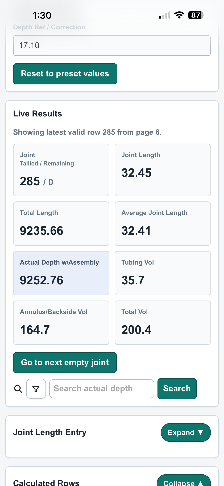
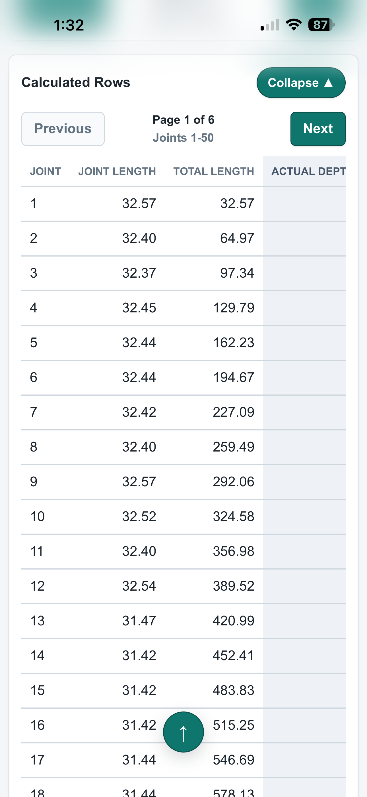
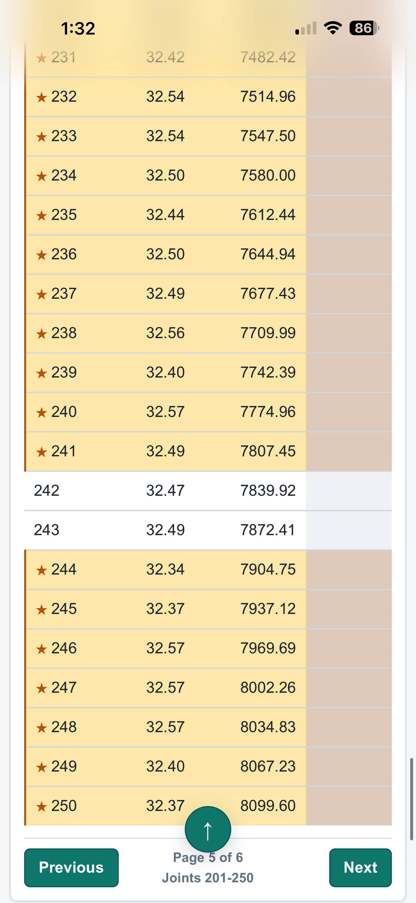
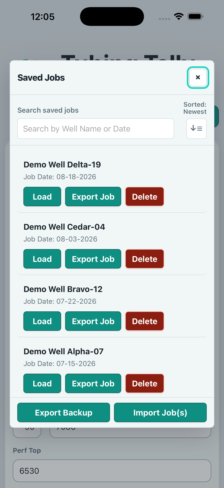
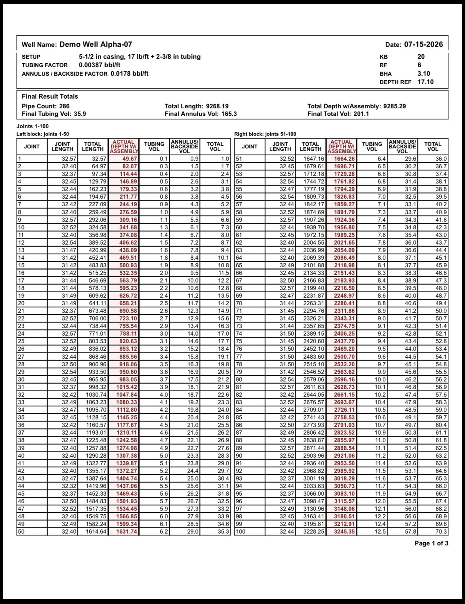
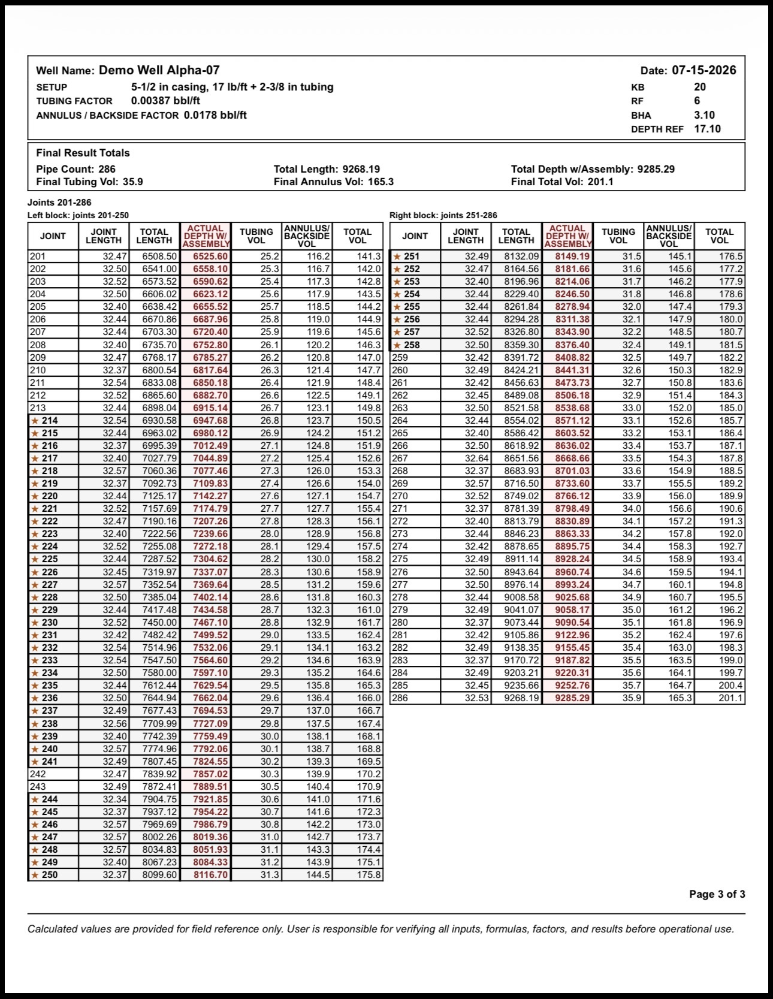

Early Beta · TestFlight Required
Oilfield Tubing Tally
The calculation aid for tubing tally and volume estimates. Enter joints, save jobs, review live results, and export clean PDF reports from iPhone or iPad.

Features
Built for the field
Fast tubing tally and volume estimates for real field workflows.
Save and manage jobs
Keep job details, setup values, notes, and tallies organized in one place.
Print & export
Create PDF reports for records, review, or sharing.
Cloud sync is planned
Cloud sync is planned so jobs can follow users between devices once it is available.
How It Works
Enter Job Info
Add well info, setup values, and job notes.
Tally Joints
Enter joint lengths and automatically calculate depth and volume.
Review Results
See live results update as you go — depth, volume, and more.
Export & Share
Export a PDF report or save your job for later.
App screenshots

Enter setup values

Live calculations

Detailed calculated rows

Navigate all joints

Organize saved jobs
Professional PDF Reports
Generate detailed, print-ready reports.
Export clean reports with your job summary and calculated rows so the work can be saved, checked, or shared.
- Job setup and factors
- Final result totals
- Calculated rows in tables
- Multi-page exports


Early Beta on TestFlight
Test the app before the App Store release.
Oilfield Tubing Tally is currently in beta. Join the TestFlight beta to try it out and help shape the future of the app.
How to install
- Download the TestFlight app.
- Tap our Join the iOS/iPadOS Beta on TestFlight button.
- Accept the invitation and view the app in TestFlight.
- Install the app and start tallying.
Want to be a named iOS tester?
The public TestFlight link above works without this form. Use this optional Google Form only if you want to be contacted as a named tester. Do not include customer, well, lease, personnel, operator, or job data.
Use Android?
Android support is planned but not available yet. Join the interest list if you want to be contacted when Android testing opens.
Help make it better
Your feedback helps us improve Oilfield Tubing Tally. Report bugs, request features, or tell us what would make the app easier to use in the field.